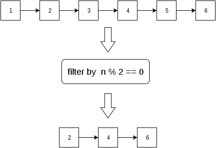

函數式程式設計¶
函數式程式設計 (functional programming) 是另一種程式設計的模式 (paradigm)。此種模式以函數為主體，撰寫時儘量減少狀態改變，以減少程式的臭蟲。不同程式語言對函數式程式設計的支援程度差異相當大；有些語言整體上即以此模式為主，像是 Lisp、Erlang、OCaml、F# 或是 Haskell 等；有些語言雖然不以此模式為主，但提供部分相關的功能，像是 Perl、Python 或是 Java 8 等。雖然 Rust 官方網站上的資料沒有強調 Rust 和函數式程式設計的關係，Rust 也支援許多函數式程式設計的功能。
Closure¶
在 Rust 中，函式也可以是物件，如下例：
fn main() {
let add_one = |x: i32| x + 1;
assert_eq!(6, add_one(5));
}
在上例中，add_one 是一個函式物件 (function object)，透過這個機制，我們可以將函式像物件般存在變數中，之後再呼叫。在 Rust 中，add_one 即為 Closure。在這個範例中 |x: i32| x + 1 是以 Closure 的方式撰寫函數，其中 |x: i32| 的部分是函數參數，而 x + 1 的部分是函數本體；寫 Closure 時，不需要明確指明回傳值，Rust 會自動推斷該有的回傳型別。
註：Rust 的 Closure 型別其實不是函數式程式設計中的閉包 (Closure)，比較好的稱呼應該是函式物件。後文中會用範例展示實質的閉包。為了遵守 Rust 的習慣用法，本書仍沿用 Closure 這個詞彙來指稱 Rust 的函式物件。
若 Closure 內容較長，也可改寫成多行的形式，如下：
fn main() {
let add_one = |x: i32| {
let mut n = x;
n += 1;
n
};
assert_eq!(6, add_one(5));
}
或是明確指定回傳型別，如下：
fn main() {
let add_one = |x: i32| -> i32 {
let mut n = x;
n += 1;
n
};
assert_eq!(6, add_one(5));
}
但是 Rust 將函數和 Closure 視為不同的東西，函數不是表達式，而 Closure 是。所以，以下的寫法是錯誤的：
fn main() {
// fn is not an expression.
let add_one = fn f(x: i32) -> i32 {
let mut n = x;
n += 1;
n
};
assert_eq!(6, add_one(5));
}
由於 Closure 可以作為值，所以，Closure 也可以做為函式的回傳值。如下例：
fn add_one(x: i32) -> Box<Fn(i32) -> i32> {
Box::new(move |n| n + x)
}
fn main() {
let f = add_one(5);
assert_eq!(6, f(1));
}
由於 Closure 的型別不能實體化，而要借助 Box<T> 才能將其實體化。在 Rust 中，Closure 的型別視為一種 trait，和其他的 trait 一樣，本身不能實體化。另外，為了解決 ownership 的問題，Rust 使用 move 這個關鍵字將變數的所有權移到函式外。
如果我們想要實作有狀態改變的閉包，Closure 的形別要改為 FnMut，如下例：
fn add_one(x: i32) -> Box<FnMut() -> i32> {
let mut n = x;
Box::new(move || {
n += 1;
n
})
}
fn main() {
let mut f = add_one(5);
assert_eq!(f(), 6);
assert_eq!(f(), 7);
assert_eq!(f(), 8);
}
在本例中，add_one 的狀態會存在 f 物件中，每次執行 f 時，其內部的 n 就遞增 1，從外部程式的效果看來，就像是 f 會遞增一樣。
除了作為回傳值為，Closure 還可以作為函式的參數，如下例：
fn my_filter<F, T>(vec: & [T], f: F) -> Vec<T>
where F: Fn(T) -> bool, T: Copy {
let mut v: Vec<T> = Vec::new();
for i in 0..(vec.len()) {
if f(vec[i]) == true {
v.push(vec[i]);
}
}
v
}
fn main() {
let vec = vec![1, 2, 3, 4, 5, 6, 7, 8, 9, 10];
let filtered = my_filter(&vec, |x| x % 2 == 0);
assert_eq!(filtered, vec![2, 4, 6, 8, 10]);
}
在本範例中，my_filter 接受 Closure 為參數，並在函式中呼叫該 Closure，透過該Closure 實作的條件將 vector 過濾掉不符條件的值。為了讓函式的介面較簡潔，我們這裡使用泛型函式。高階函式 (higher-order function) 以函式為參數或回傳值，在本節中的 add_one 或是 my_filter 這種函式就稱為高階函式，高階函式是函數式程式設計中相當重要的應用。Rust 實作了許多高階函式，程式設計者不需要再重頭撰寫程式碼。
高階函式¶
高階函式是「使用函式的函式」，在實作上來說，高階函式以函數為參數或回傳值。透過高階函式，可以用很緊湊的程式碼來撰寫程式。許多的高階函式，使用到串列操作的概念。串列是一種線性容器，如下圖：

對於高階函式的使用者來說，不需要擔心串列的實作。在實務上，高階函數預先寫好相關的串列操作，只要使用者將函式填入參數，即可操作。假設有一個 filter 函數，會過濾掉串列中不符合其條件的元素，示意圖如下：
近年來火紅的大數據運算框架 Hadoop 和 Spark 就用到許多高階函數的概念。如以下以 Python 撰寫的 Spark 程式 (摘自 Spark 官網)：
text_file = sc.textFile("hdfs://...")
counts = text_file.flatMap(lambda line: line.split(" ")) \
.map(lambda word: (word, 1)) \
.reduceByKey(lambda a, b: a + b)
counts.saveAsTextFile("hdfs://...")
其中的 flatMap、map和 reduceByKey 都是高階函數的例子，而 lambda 則是函數物件。在不同程式語言中，概念相近的高階函式會用不同名稱來命名，只要有高階函式的概念，再將語法轉換一下即可。
注意事項¶
在 Rust 中，迭代器 (iterator) 和容器 (containter) 是兩種不一樣的型別，高階函數需搭配迭代器，而平常對資料的操作要用容器。一個例子就是 vector 和其 iterator 間的關係。
接下來，我們會介紹 Rust 中常見的高階函數。
filter¶
我們在先前有展示過 filter 的示意圖，filter 的概念是將串列中不符合條件的元素過濾掉。範例如下：
fn main() {
// range (1..7) includes 1 but excludes 7
let filtered = (1..7).filter(|x| x % 2 == 0).collect::<Vec<i32>>();
assert_eq!(filtered, vec![2, 4, 6]);
}
在本例中，使用 filter 過濾串列後，再轉為 vector，以利後續程式使用。
map¶
map 的概念是將串列中每個元素經處理後回傳，示意圖如下：
註：在某些函數式程式設計語言中，使用 apply 函式完成類似的概念。
範例如下：
fn main() {
let mapped = (1..4).map(|x| x * x).collect::<Vec<i32>>();
assert_eq!(mapped, vec![1, 4, 9]);
}
fold¶
fold 的概念是將串列的元素以指定的方式合併，示意圖如下：
註：在函數式程式設計語言中，常以 reduce 作為同概念的函數名稱。
範例如下：
fn main() {
// Calculate the sum from 1 to 10
let reduced = (1..11).fold(0, |a, b| a + b);
assert_eq!(reduced, 55);
}
zip¶
zip 合併兩個串列後，回傳一個新的串列，該串列的元素為原先兩串列中相同位置的元素組成的 tuple。示意圖如下：
範例如下：
fn main() {
let number_in_english = vec!["one", "two", "three"];
let number_in_german = vec!["eins", "zwei", "drei"];
let mut zipped = number_in_english.iter().zip(number_in_german.iter());
assert_eq!(zipped.next(), Some((&"one", &"eins")));
assert_eq!(zipped.next(), Some((&"two", &"zwei")));
assert_eq!(zipped.next(), Some((&"three", &"drei")));
assert_eq!(zipped.next(), None);
}
要注意的是，在 Rust 中，zip 傳回的是參考而非值本身，使用時需解參考。
partition¶
partition 根據特定的條件將輸入串列分為兩個新的串列，示意圖如下：
範例如下：
fn main() {
let (odd, even): (Vec<i32>, Vec<i32>) =
(1..11).partition(|n| n % 2 != 0);
assert_eq!(odd, vec![1, 3, 5, 7, 9]);
assert_eq!(even, vec![2, 4, 6, 8, 10]);
}
enumerate¶
enumerate 傳回新的串列，其元素為原串列的元素的索引值及該元素本身組成的 tuple，示意圖如下：
範例如下：
fn main() {
let vec = vec!["a", "b", "c"];
let mut enumerated = vec.iter().enumerate();
assert_eq!(enumerated.next(), Some((0, &"a")));
assert_eq!(enumerated.next(), Some((1, &"b")));
assert_eq!(enumerated.next(), Some((2, &"c")));
assert_eq!(enumerated.next(), None);
}
要注意的是，enumerate 傳回的是參考而非值本身，使用時需解參考。
組合數個高階函數¶
高階函數除了單獨呼叫外，還可以相互組合，達成更複雜的效果。見下例：
fn main() {
let sum = (1..11).filter(|x| x % 2 != 0)
.map(|x| x * x)
.fold(0, |a, b| a + b);
assert_eq!(sum, ((1 * 1) + (3 * 3) + (5 * 5) + (7 * 7) + (9 * 9)));
}
讀者可嘗試用基本的控制結構重新撰寫以上程式，就可以發現到函數式程式設計的程式碼相當緊湊，但對不明白此種模式的程式設計者來說，這種程式碼相對難以閱讀。
純函式¶
純函式 (pure function) 是函數式程式設計的一個概念，對於純函式來說，只要輸入的參數是相同的，得到的輸出就是相同的；換句話說，純函式沒有副作用 (side effect)。副作用在電腦程式中相當常見，像是改變某個物件內在狀態、將結果輸出到終端機、將資料存入外部檔案等；然而，過度依賴函式的副作用，有時候反而造成預期外的錯誤。函數式程式設計的其中一個概念就是減少副作用。
以下的範例是純函式：
fn add_one(x: i32) -> i32 {
x + 1
}
fn main() {
let x = 5;
assert_eq!(6, add_one(x));
assert_eq!(6, add_one(x));
assert_eq!(6, add_one(x));
}
在本例中，每次輸入 x，得到的值都是 6。由於 x 本身沒有內在狀態，所以，可預期每次輸入的結果都一樣。
以下的範例不是純函式：
fn square_in_place(vec: &mut [i32]) {
for e in vec.iter_mut() {
*e = (*e) * (*e)
}
}
fn main() {
let mut vec = vec![1, 2, 3];
println!("{:?}", vec);
assert_eq!(vec, vec![1, 2, 3]);
square_in_place(&mut vec);
assert_eq!(vec, vec![1, 4, 9]);
square_in_place(&mut vec);
assert_eq!(vec, vec![1, 16, 81]);
}
在本例中，每次輸入 vec 得到的結果都不同。由於 vec 本身有內在狀態，而 square_in_place 有副作用，導致 vec 輸入的結果會隨輸入次數而改變。
主流的程式設計模式，像是物件導向等，都是建立在可改變狀態的物件上，而函數式程式設計鼓勵程式設計者撰寫純函式，減少副作用的産生。程式的用途在於操作資料，操作資料的過程就會產生副作用，副作用不會完全消除，但是，下意識地在程式中減少副作用的産生，可減少程式中的臭蟲。
遞迴¶
遞迴不是函數式程式設計專有的特性，即使像是 C 這種非函數式程式語言也有遞迴的機制。然而，函數式程式語言支援 tail-call optimization，使得遞迴和控制結構達到相近的速度。Rust 目前沒有實作此最佳化機制，但 Rust 社群中對此有相關的討論 (如 Rust Issue 217)。
Lazy Evaluation¶
我們舉一個比較特別的例子，來說明什麼是 lazy evaluation。以下的 Haskell 程式是正確的：
main = print len
list = [1, 2, 3/0, 4]
len = length list
編譯及執行該程式的步驟如下：
$ ghc -o lazy lazy.hs
$ ./lazy
4
但等效的 Rust 程式會出錯：
fn main() {
let length = vec![1, 2, 3/0, 4].len();
println!("{}", length);
}
本程式引發以下錯誤：
thread 'main' panicked at 'attempt to divide by zero'
其實，如果將以上程式用目前主流的程式語言去改寫，都會引發錯誤，這是因為大部分的程式語言沒有實作 lazy evaluation 的功能。而 Haskell 是少數實作 lazy evaluation 的函數式程式語言之一。
然而，lazy evaluation 有時候卻很有用，如以下例子：
fn main() {
let vec = (1..).filter(|x| x % 2 != 0).take(5).collect::<Vec<i32>>();
assert_eq!(vec, vec![1, 3, 5, 7, 9]);
}
在本程式中，(1..).filter(|x| x % 2 != 0).take(5) 的意義是「從 1 開始建立一個無限長的數字串列，每次遞增 1；只取奇數 (odd number)；取前 5 個元素」。若沒有使用 lazy evaluation 的技術，這個程式會變成無法停止的程式。Rust 在某些部份實作 lazy evaluation，其他的部分則無。
型別¶
型別推論 (type inference) 也是函數式程式設計的其中一項特色，很多函數式程式語言都內建這項功能，像是 Haskell 或是 OCaml 等，而 Rust 也內建型別推論，使得 Rust 寫起來某種程度上類似高階語言。另外，Rust 中的 trait 也是師法 Haskell 的 type class，trait 在多型及運算子重載等方面都相當地實用。